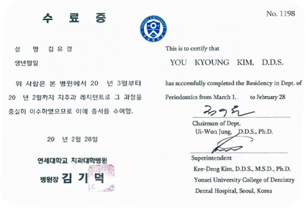

턱관절치료


대한 턱관절교합학회 교육을이수한 연세리안치과의 의료진이함께합니다.
턱관절 질환은 치아의 맞물림, 교합 관계와 관련된
턱 관절 디스크, 안면 근육 등 전반적인 구강 상태를
고려햐여야 하는 치과 진료 분야입니다.
자신도 모르는 구강 악습관, 근육 뭉침, 교합의 문제에 대해
측두하악장애 진단 검사를 받고, 약물 및 비침습적
보존치료를 통해 턱관절 통증, 소리, 개구 제한 등의
문제를 개선할 수 있습니다.
턱관절 질환의 진단 방법
step1
초진 및 설문
병력 청취
스트레스 척도 검사
step2
방사선 검사
턱관절 파노라마
저선량 콘빔 CT
step3
측두하악 검사
턱관절의
움직임 확인
step4
촉진 및 시진 검사
통증 원인
분석
step5
체계적인 진단 분류 및 치료법 제시
DC/TMD를 통한
진단 및 치료방법 제시
턱관절 질환의 치료 방법
구강 악습관의 개선
분사 신장 등 물리치료
약물 치료
보톡스 치료
연세리안치과에서는 턱관절 촬영에 특화된 전선량 CBCT를 사용하여 정밀한 턱관절 분석을 합니다.
정밀하고 정확한 턱관절 촬영을 위한
전문 장비인 저선량 CBCT를 이용하여
양쪽 턱관절을 동시에 촬영합니다.